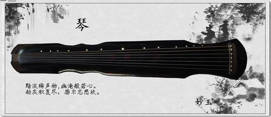

古人在演奏乐器时特别讲究氛围，必定先焚香沐浴，净心调神，这与佛教文化似出一源，体现了中国乐器的深邃性和高贵不可亵渎性。中国的古乐器是透过感官直达心底，在心灵深处回旋、激荡、屡屡不绝，余味无穷。中国乐器的音色历来注重个性化，强调不可替代性。凡是在历史上被淘汰或没有得到长久传承或普遍使用的乐器，大都是因为其音色与其他乐器相似。如瑟因其音色与筝和箜篌相近而几乎绝迹，排箫因其与洞箫相近而失传多时。因而好的乐器都有各自的品性。
古琴就象个大度的能包容一切的高人名士。
中国古典音乐的意境最适合古筝来诠释，任何乐器的声韵都无法做到如此完美。古人曾有“坐客满筵都不语，一行哀雁十三声”句形容筝演奏艺术达到令人神弛的境地。
琵琶的线条和形态很柔美，娴静地摆在那里犹如一个性感的女人。可它的品性却是刚烈的，一如霸气的勇士。所以它最能演绎《霸王卸甲》和《十面埋伏》，因为它的密度和强度及嘈嘈切切的声音总不免绷紧人的神经，随时担心着弦会断裂。一般场合心境是不大适宜听这样的曲子的。
而洞箫更象隐者僧人，总在月色下在松林中在幽涧边超然忘我。其实今日洞箫之源就是汉代的羌笛，王之焕“羌笛何须怨杨柳”的情感基调正也说明了前代羌笛和今日洞箫所善于表达的情绪。洞箫与竹笛外形相似又同是吹奏的乐器，但笛音色粗犷、高昂、嘹亮，大异洞箫。微微惆怅的《凤凰台上忆吹箫》低低说着箫史与弄玉的动人传说，竹笛是无法摹拟的。同时它又蕴含着禅味，《寒山僧踪》《深山禅林》是最适合它的，幽深渺远的声音绵长不绝，让人恍惚中悟到回归和出世之高深。
二胡是位饱经沧桑的老人，或许就说是瞎子阿炳更贴切。阿炳其实也擅长琵琶、瑟、笙、鼓等多种乐器，他是天才的音乐家。每种乐器都驾奴着演奏者倾听者的思维神经，安静地感受它们，你会被那种无形的网纠缠着感染着，那是着了魔的状态，直到曲终时才能缓缓找回自己。